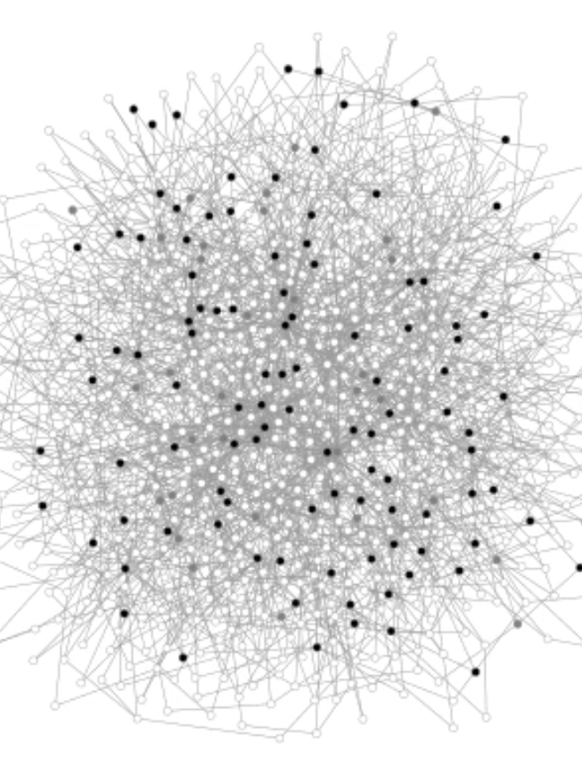

A network-based SIR simulation of a COVID-19 outbreak.
Research
My doctoral research focuses on pricing and auctions, specifically providing complexity
bounds and designing effective algorithms for determining viability of mechanisms in the
dual settings of social welfare and profit maximisation. This stimulating and active area of
research has an abundance of open problems and deep implications for the world outside of
academia.
I am also interested in mechanisms that maximise the benefits of scarce resources in low to
middle income countries (LMICs). In response to the COVID-19 pandemic, I co-founded the
project Test and Contain, which
considers the problem of utilising limited testing resources in an optimal way so as to
minimise the impact on the health and livelihoods of those who are hardest hit in
LMICs. This project is supported by a GCEC'20 grant.
Test and Contain (1 minute, GCEC'20 lightning talk)
Publications
1. Test and Contain: A Resource-Optimal Testing Strategy for COVID-19
link
Jakob Jonnerby, Philip Lazos, Edwin Lock, Francisco Marmolejo-Cossío, C. Bronk Ramsey and Divya Sridhar.
AI for Social Good '20, Harvard CRCS Workshop,
2020
2. Characterising and recognising game-perfect graphs
link
Stephan Dominique Andres and Edwin Lock.
Discrete Mathematics and Theoretical Computer Science (DMTCS),
vol. 21:1, #6,
2019
Working Papers
3. Maximising the Benefits of an Acutely Limited Number of COVID-19 Tests
link
Jakob Jonnerby, Philip Lazos, Edwin Lock, Francisco Marmolejo-Cossío, C. Bronk Ramsey, Meghana Shukla and Divya Sridhar.
ArXiv preprint,
2020
4. Learning Strong Substitutes Demand via Queries
link
Paul W Goldberg, Edwin Lock and Francisco Marmolejo-Cossío.
ArXiv preprint,
2020
5. Solving Strong-Substitutes Product-Mix Auctions
link
Elizabeth Baldwin, Paul W Goldberg, Paul Klemperer and Edwin Lock.
ArXiv preprint,
2019